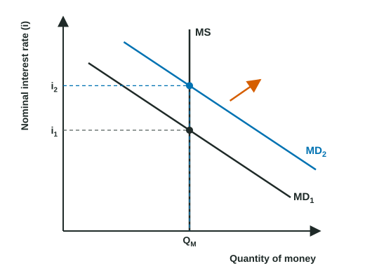

The money market is the first graph in this unit, and one of the graphs on the exam. It shows how the demand for money and the money supply set the nominal interest rate, and it links that rate to bond prices.
The demand for money
Holding money is convenient: you can spend it at once. But money pays little or no interest, while a bond pays interest. So the cost of holding money is the interest you give up, and that cost is the nominal interest rate. People demand money for two reasons:
- Transaction demand: money to pay for purchases. It rises with nominal GDP, so a higher price level or more real output means more money is needed.
- Asset demand: money held as a safe, liquid asset instead of bonds. It falls when the nominal interest rate rises, because holding money then costs more.
Together they give a money demand curve (MD) that slopes down: at a higher nominal interest rate people choose to hold less money. A change in the interest rate is a movement along MD. MD shifts when something else changes how much money people want at every rate:
| Money demand shifts right when | Money demand shifts left when |
|---|---|
| The price level rises | The price level falls |
| Real GDP rises (more transactions) | Real GDP falls, as in a recession |
| Holding money becomes more attractive | Payment cards and apps let people hold less money |
The money supply
In this graph the central bank decides how much money exists, and that quantity does not depend on the interest rate. So the money supply curve (MS) is a vertical line. It shifts right when the money supply increases and left when it decreases. (How the central bank does that is the next topic.)
Equilibrium and the bond market

The equilibrium nominal interest rate is where MD crosses MS. The market gets there through bonds:
- Rate above equilibrium: people hold more money than they want. They buy bonds, bond prices rise, and interest rates fall.
- Rate below equilibrium: people want more money than exists. They sell bonds to get money, bond prices fall, and interest rates rise.
Worked example: drawing a rise in the price level. The price level rises and the central bank keeps the money supply unchanged. Show the effect on the money market and on bond prices.
- Draw and label the graph: vertical axis "Nominal interest rate (i)", horizontal axis "Quantity of money". Draw a vertical MS and a downward-sloping MD1. Mark the equilibrium i1.
- Decide which curve moves: the price level is not on either axis, so it shifts a curve. Higher prices mean more money is needed for the same purchases: money demand shifts right to MD2. Draw an arrow.
- Find the new equilibrium: MD2 meets MS at a higher rate. Label i2 above i1, with dashed lines to the axis. The quantity of money is unchanged.
- Bond prices: to get the extra money, people sell bonds, so bond prices fall, which is the same thing as interest rates rising.
The method: label the axes, decide which curve shifts and which way, then compare the new rate with the old one, and say what happens to bond prices.
An increase in the money supply works the other way: MS shifts right, people have more money than they want at the old rate, they buy bonds, bond prices rise, and the nominal interest rate falls. A decrease in the money supply raises the rate and lowers bond prices.
Two slips cost graph points here. One is labeling the vertical axis "real interest rate" or "price": the money market uses the nominal interest rate. The other is shifting MD when the interest rate changes: a change in the rate is a movement along the curve.
For your exam
- Label: nominal interest rate (i) and quantity of money; MD slopes down, MS vertical; i1 and i2 marked on the axis.
- Price level or real GDP up: MD right, rate up, bond prices down. Money supply up: MS right, rate down, bond prices up.
- When MD shifts along a vertical MS, the quantity of money stays the same.